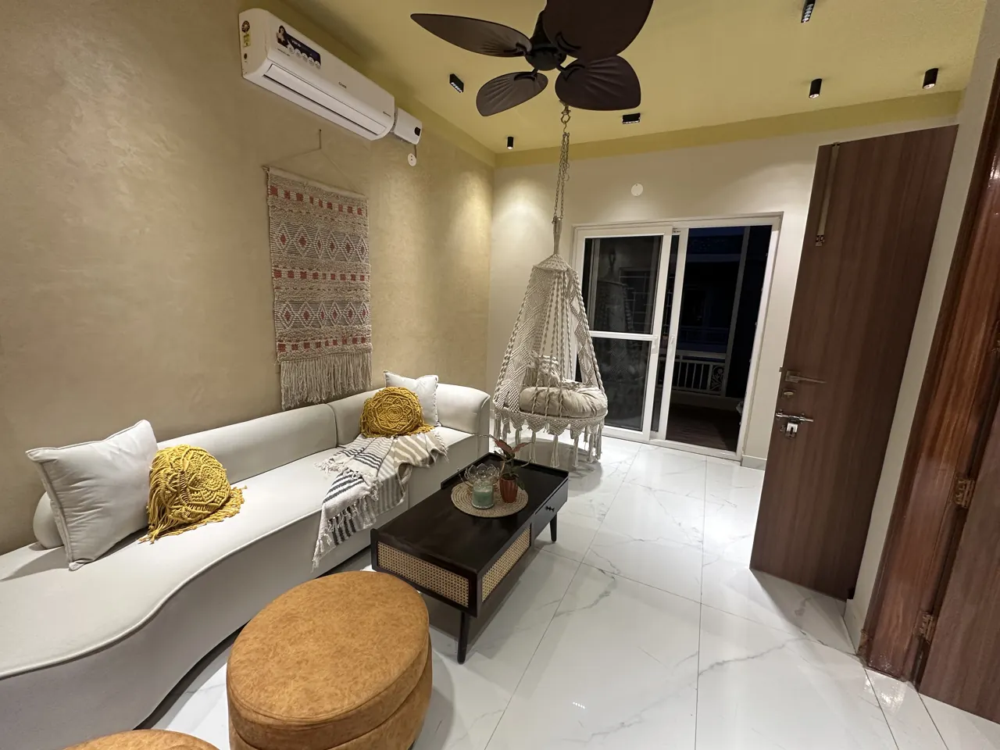
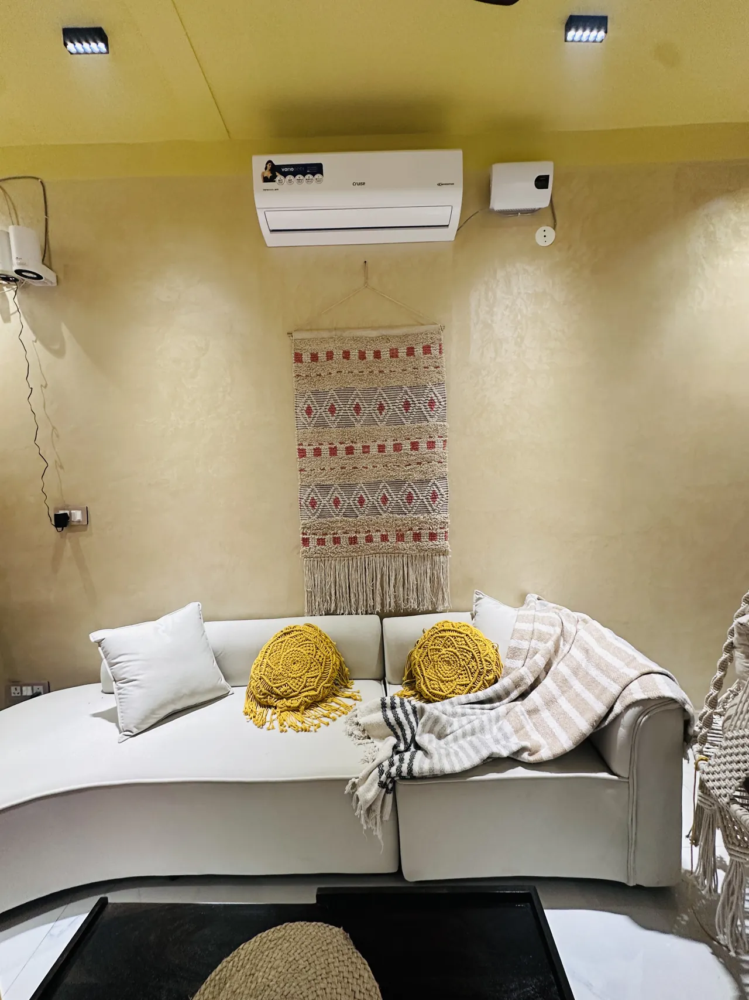
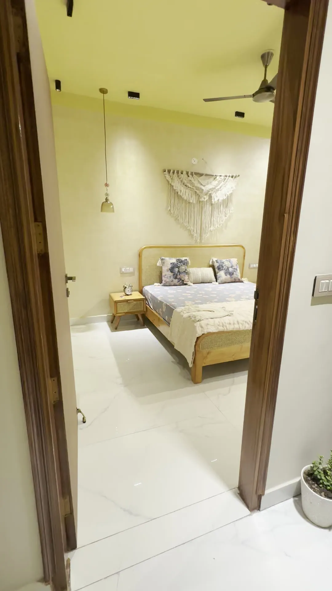
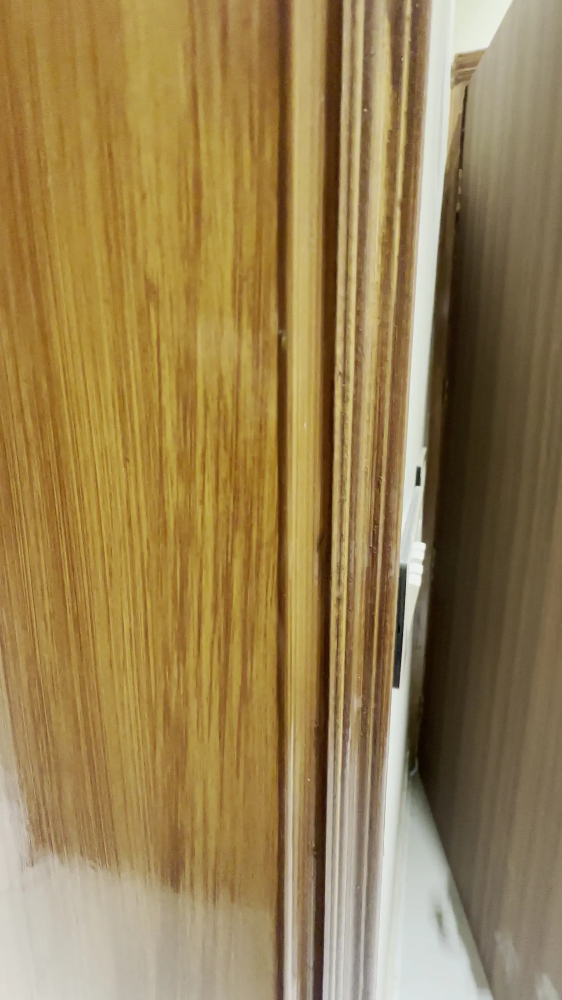
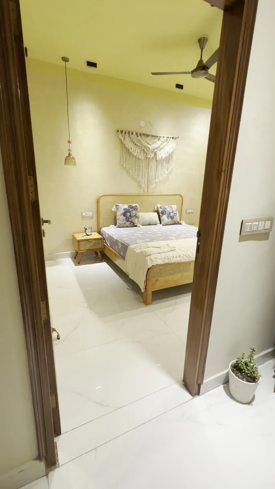

Residential / Kurali Road, Mohali
Opera Home
A compact home with a generous spirit. Earthy textures meet everyday ease.

The project
A closer look.
- Location
- Kurali Road, Mohali
- Category
- Residential
- Year
- 2025
- Studio
- DMS Studio · Mohali
A bohemian 1BHK apartment at Opera House, planned around comfortable living, practical storage and a relaxed palette. The project was coordinated remotely for an NRI client.
Design concept
Natural textures, earthy colours and warm light create a calm, welcoming setting. Careful planning makes a compact footprint work harder.
Scope
Space planning · Interior design · Storage planning · Remote project coordination
Materials & finishes +
Woven accents and tactile furnishings. Exact material brands and specifications are not published.







Project details
Good to know.
Where is Opera Home?
Opera Home is a 1BHK apartment on Kurali Road, Mohali.
What was the design focus for this compact apartment?
The documented concept uses natural textures, earthy colours, warm light and practical storage to make the compact plan work harder.
Was the project coordinated remotely?
Yes. The project record notes remote coordination for an NRI client.